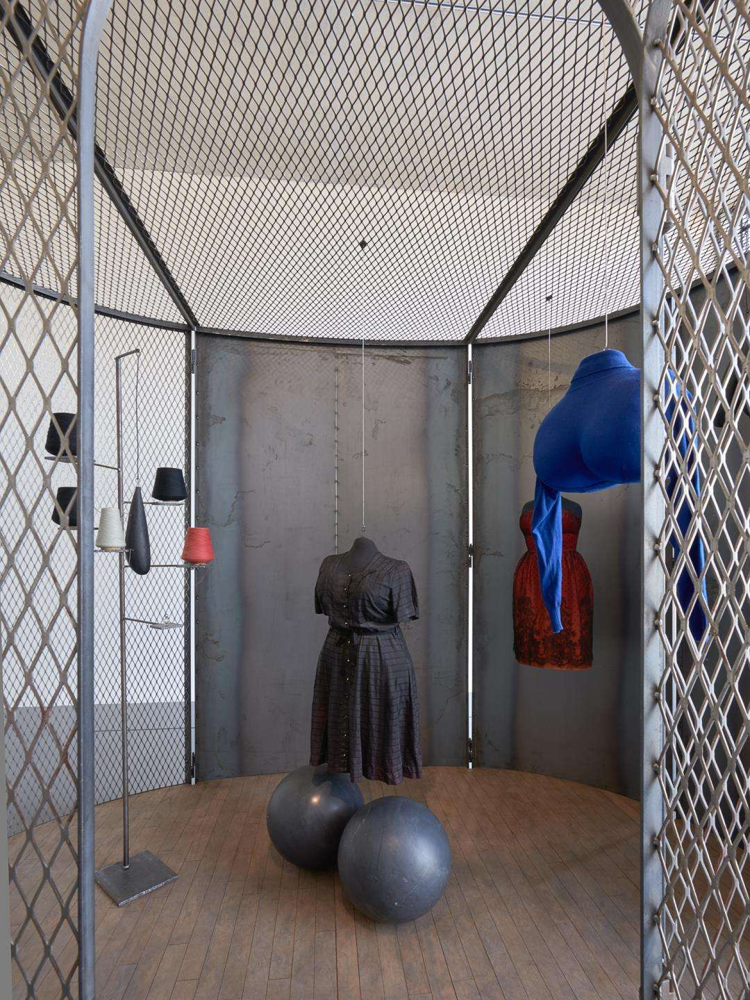

Bourgeois was born on 25 December 1911 in Paris, France.She was the second child of three born to parents JoséphineFauriaux and Louis Bourgeois. She had an older sister and a younger brother.Her parents owned a gallery that dealt primarily in antique tapestries. A few years after her birth, her family moved out of Paris and set up a workshop for tapestry restoration below their apartment in Choisy-le-Roi, for which Bourgeois filled in the designs where they had become worn.The lower part of the tapestries were always damaged which was usually the characters' feet and animals' paws.
In 1930, Bourgeois entered the Sorbonne to study mathematics and geometry, subjects that she valued for their stability,saying "I got peace of mind, only through the study of rules nobody could change." Her mother died in 1932, while Bourgeois was studying mathematics. Her mother's death inspired her to abandon mathematics and to begin studying art. She continued to study art by joining classes where translators were needed for English-speaking students, in which those translators were not charged tuition. In one such class Fernand Léger saw her work and told her she was a sculptor, not a painter. Bourgeois took a job as a docent, leading tours at the Musée de Louvre.
Bourgeois graduated from the Sorbonne 1935. She began studying art in Paris, first at the École des Beaux-Arts and École du Louvre, and after 1932 in the independent academies of Montparnasse and Montmartre such as Académie Colarossi, Académie Ranson, Académie Julian, Académie de la Grande Chaumière and with André Lhote, Fernand Léger, Paul Colin and Cassandre.
Bourgeois had a desire for first-hand experience, and frequently visited studios in Paris, learning techniques from the artists and assisting with exhibitions.
Bourgeois briefly opened a print store beside her father's tapestry workshop. Her father helped her on the grounds that she had entered into a commerce-driven profession. Bourgeois emigrated to New York City in 1938. She studied at the Art Students League of New York, studying painting under Vaclav Vytlacil, and also producing sculptures and prints."The first painting had a grid: the grid is a very peaceful thing because nothing can go wrong ... everything is complete. There is no room for anxiety ... everything has a place, everything is welcome." Bourgeois incorporated those autobiographical references to her sculpture Quarantania I, on display in the Cullen Sculpture Garden at the Museum of Fine Arts, Houston.
For Bourgeois the early 1940s represented the difficulties of a transition to a new country and the struggle to enter the exhibition world of New York City. Her work during this time was constructed from junkyard scraps and driftwood which she used to carve upright wood sculptures. The impurities of the wood were then camouflaged with paint, after which nails were employed to invent holes and scratches in the endeavor to portray some emotion. The Sleeping Figure is one such example which depicts a war figure that is unable to face the real world due to vulnerability. Throughout her life, Bourgeois's work was created from revisiting of her own troubled past as she found inspiration and temporary catharsis from her childhood years and the abuse she suffered from her father. Slowly she developed more artistic confidence, although her middle years are more opaque, which might be due to the fact that she received very little attention from the art world despite having her first solo show in 1945. In 1951, her father died and she became an American citizen.
In 1954, Bourgeois joined the American Abstract Artists Group, with several contemporaries, among them Barnett Newman and Ad Reinhardt. At this time she also befriended the artists Willem de Kooning, Mark Rothko, and Jackson Pollock.As part of the American Abstract Artists Group, Bourgeois made the transition from wood and upright structures to marble, plaster and bronze as she investigated concerns like fear, vulnerability and loss of control. This transition was a turning point. She referred to her art as a series or sequence closely related to days and circumstances, describing her early work as the fear of falling which later transformed into the art of falling and the final evolution as the art of hanging in there. Her conflicts in real life empowered her to authenticate her experiences and struggles through a unique art form. In 1958, Bourgeois and her husband moved into a terraced house at West 20th Street, in Chelsea, Manhattan, where she lived and worked for the rest of her life.
Despite the fact that she rejected the idea that her art was feminist, Bourgeois's subject was the feminine. Works such as Femme Maison (1946-1947), Torso self-portrait (1963-1964), Arch of Hysteria (1993), all depict the feminine body. In the late 1960's, her imagery became more explicitly sexual as she explored the relationship between men and women and the emotional impact of her troubled childhood. Sexually explicit sculptures such as Janus Fleuri, (1968) show she was not afraid to use the female form in new ways.She has been quoted to say "My work deals with problems that are pre-gender," she wrote. "For example, jealousy is not male or female."With the rise of feminism, her work found a wider audience. Despite this assertion, in 1976 Femme Maison was featured on the cover of Lucy Lippard's book From the Center: Feminist Essays on Women's Art and became an icon of the feminist art movement.
In 1973, Bourgeois started teaching at the Pratt Institute, Cooper Union, Brooklyn College and the New York Studio School of Drawing, Painting and Sculpture. From 1974 until 1977, Bourgeois worked at the School of Visual Arts in New York where she taught printmaking and sculpture.She also taught for many years in the public schools in Great Neck, Long Island. In the early 1970s, Bourgeois held gatherings called "Sunday, bloody Sundays" at her home in Chelsea. These salons would be filled with young artists and students whose work would be critiqued by Bourgeois. Bourgeois’s ruthlessness in critique and her dry sense of humor led to the naming of these meetings. Bourgeois inspired many young students to make art that was feminist in nature.However, Louise's long-time friend and assistant, Jerry Gorovoy, has stated that Louise considered her own work "pre-gender".
Bourgeois aligned herself with activists and became a member of the Fight Censorship Group, a feminist anti-censorship collective founded by fellow artist Anita Steckel. In the 1970s, the group defended the use of sexual imagery in artwork. Steckel argued, "If the erect penis is not wholesome enough to go into museums, it should not be considered wholesome enough to go into women." In 1978 Bourgeois was commissioned by the General Services Administration to create Facets of the Sun, her first public sculpture.The work was installed outside of a federal building in Manchester, New Hampshire.
Bourgeois received her first retrospective in 1982, by the Museum of Modern Art in New York City. Until then, she had been a peripheral figure in art whose work was more admired than acclaimed. In an interview with Artforum, timed to coincide with the opening of her retrospective, she revealed that the imagery in her sculptures was wholly autobiographical. She shared with the world that she obsessively relived through her art the trauma of discovering, as a child, that her English governess was also her father's mistress. In 1989, Bourgeois made a drypoint etching, Mud Lane, of the home she maintained in Stapleton, Staten Island, which she treated as a sculptural environment rather than a living space.
Bourgeois had another retrospective in 1989 at Documenta 9 in Kassel, Germany. In 1993, when the Royal Academy of Arts staged its comprehensive survey of American art in the 20th century, the organizers did not consider Bourgeois's work of significant importance to include in the survey.However, this survey was criticized for many omissions, with one critic writing that "whole sections of the best American art have been wiped out" and pointing out that very few women were included. In 2000 her works were selected to be shown at the opening of the Tate Modern in London.In 2001, she showed at the Hermitage Museum. In 2010, in the last year of her life, Bourgeois used her art to speak up for Lesbian, Gay, Bisexual and Transgender (LGBT) equality. She created the piece I Do, depicting two flowers growing from one stem, to benefit the nonprofit organization Freedom to Marry. Bourgeois has said "Everyone should have the right to marry. To make a commitment to love someone forever is a beautiful thing."Bourgeois had a history of activism on behalf of LGBT equality, having created artwork for the AIDS activist organization ACT UP in 1993.
Bourgeois died of heart failure on 31 May 2010, at the Beth Israel Medical Center in Manhattan. Wendy Williams, the managing director of the Louise Bourgeois Studio, announced her death.She had continued to create artwork until her death, her last pieces being finished the week before. The New York Times said that her work "shared a set of repeated themes, centered on the human body and its need for nurture and protection in a frightening world." Her husband, Robert Goldwater, died in 1973. She was survived by two sons, Alain Bourgeois and Jean-Louis Bourgeois. Her first son, Michel, died in 1990.
Femme Maison (1946–47) is a series of paintings in which Bourgeois explores the relationship of a woman and the home. In the works, women's heads have been replaced with houses, isolating their bodies from the outside world and keeping their minds domestic. This theme goes along with the dehumanization of modern art.

While in her eighties, Bourgeois produced two series of enclosed installation works she referred to as Cells. Many are small enclosures into which the viewer is prompted to peer inward at arrangements of symbolic objects; others are small rooms into which the viewer is invited to enter. In the cell pieces, Bourgeois uses earlier sculptural forms, found objects as well as personal items that carried strong personal emotional charge for the artist. The cells enclose psychological and intellectual states, primarily feelings of fear and pain. Bourgeois stated that the Cells represent "different types of pain; physical, emotional and psychological, mental and intellectual ... Each Cell deals with a fear. Fear is pain ... Each Cell deals with the pleasure of the voyeur, the thrill of looking and being looked at.
In the late 1990s, Bourgeois began using the spider as a central image in her art. Maman, which stands more than nine metres high, is a steel and marble sculpture from which an edition of six bronzes were subsequently cast. It first made an appearance as part of Bourgeois's commission for The Unilever Series for Tate Modern's Turbine Hall in 2000, and recently, the sculpture was installed at the Qatar National Convention Centre in Doha, Qatar.Her largest spider sculpture titled Maman stands at over 30 feet (9.1 m) and has been installed in numerous locations around the world.It is the largest Spider sculpture ever made by Bourgeois.Moreover, Maman alludes to the strength of her mother, with metaphors of spinning, weaving, nurture and protection.The prevalence of the spider motif in her work has given rise to her nickname as Spiderwoman.
The Spider is an ode to my mother. She was my best friend. Like a spider, my mother was a weaver. My family was in the business of tapestry restoration, and my mother was in charge of the workshop. Like spiders, my mother was very clever. Spiders are friendly presences that eat mosquitoes. We know that mosquitoes spread diseases and are therefore unwanted. So, spiders are helpful and protective, just like my mother.